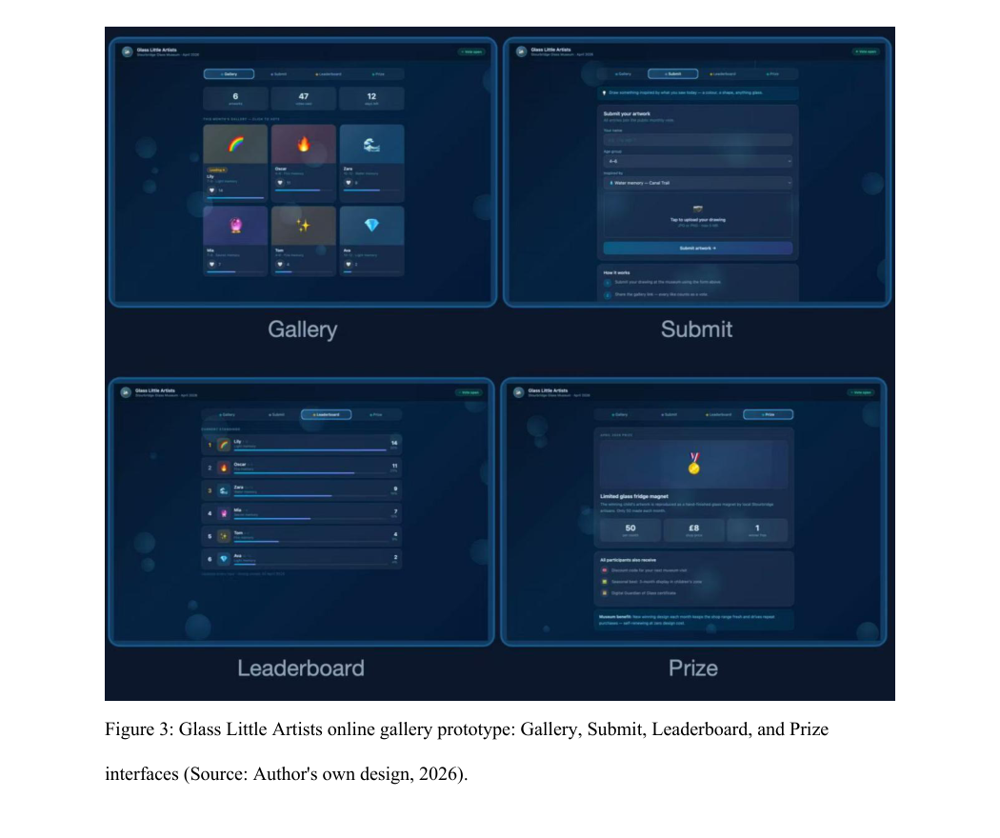
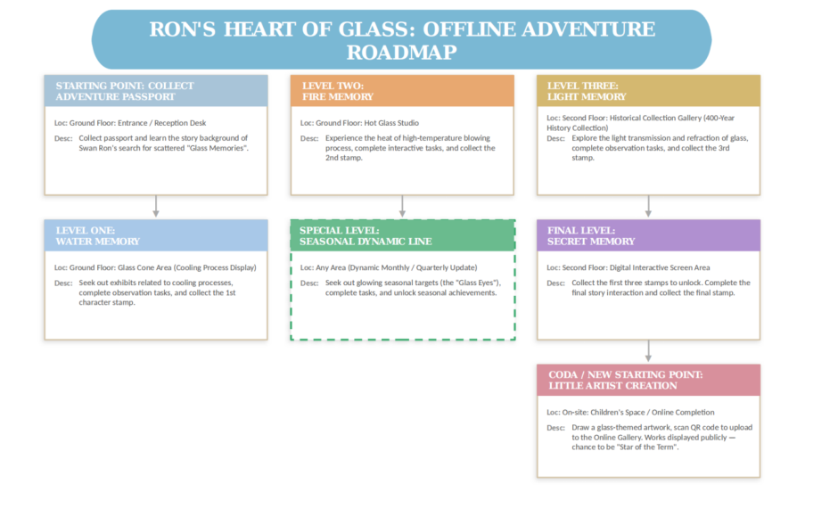
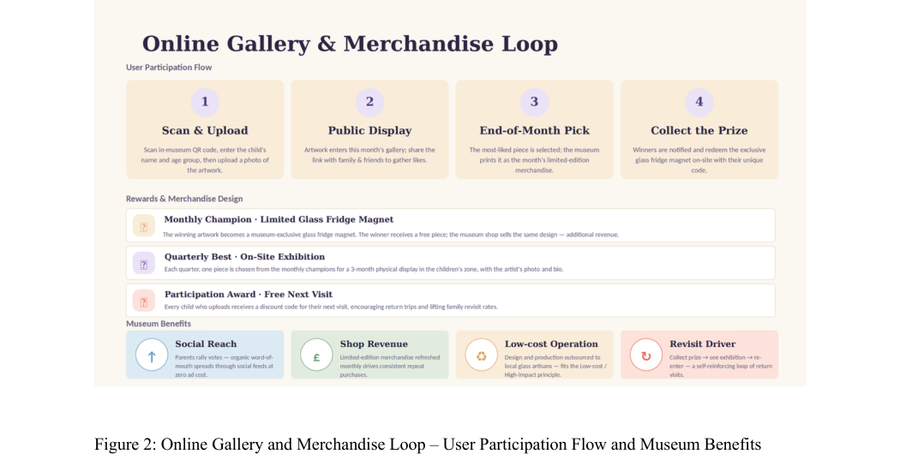
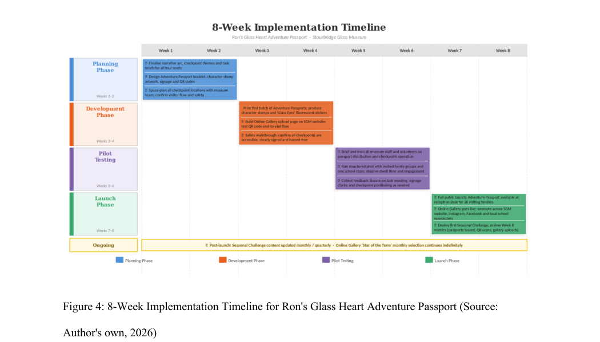

MUSEUM FAMILY ENGAGEMENT · DIGITAL PARTICIPATION
Ron’s Glass Heart Adventure Passport

项目概述
项目以 Stourbridge Glass Museum 为场景，将家庭参观重新设计为低成本、故事驱动的参与旅程。儿童领取冒险护照，在不同展区完成观察任务、收集角色印章，并将玻璃主题画作上传至线上儿童画廊。
核心创意与职责
以 Ron the Swan 为叙事向导，将“寻找玻璃遗失的记忆”拆分为 Water、Fire、Light 与 Secret 四个阶段。本人参与概念发展、访客旅程、传播策划和数字参与机制设计，并整理实施节奏、预算逻辑与风险控制。


